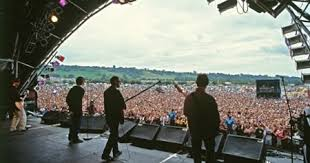
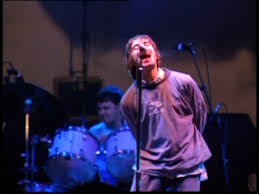
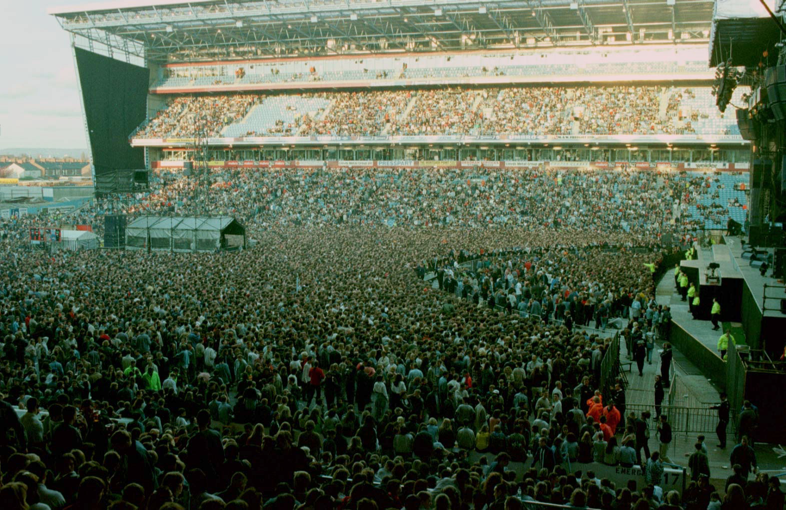
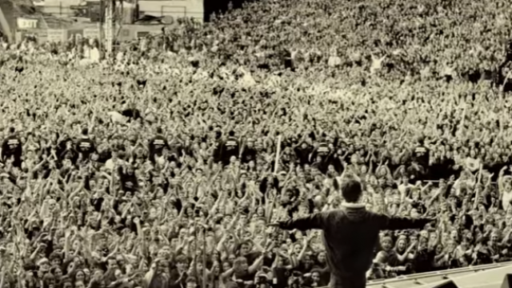

Famous Gigs
Glastonbury 1994, 1995 and 2004
1994
On June 26th Oasis played their first apperance at Glastonbury on the NME stage at this time they were still an up and coming band. At this point of time they had only releaed two singles Shakermaker and Supersonic and were still a month away from releasing their first album Definetly maybe. Nobody at this point knew how far the band were going to come when they saw them for the first time. Speaking to the press both Liam and Noel said thats probaly biigest thing we have ever done playing infront of around 15,000 fans so we aree quite proud and lets hope there is more to come. The performance that night is what most people believe propelled them to stardom
1995
One year on after there fisrt performance and the same year their fist hit album Definetly Maybe was released Oasis had become one of the most well known bands of their Time. And because of theur popularity they were asked back to Glastonbury on the 25th aniversary of the festival but this time they were asked to headline the festival on the infamous Pyramid stage. By this time the band were well known that they were already starting to work on their second album Whats the Story Morning Glory and there were a few supprises during their set including the introduction of one of their most well known songs Wonderwall.
2004
Oasis were back at the famous festival again to headline it but this time the performace was critised by fans and media as benig a mediocre performance. Things in the band between brothers Liam and Noel were not good there were all kinds of runoours going around in the press of big fights between them and Noel wanting to leave the band. Having both been big fans of the Beatles Liam and Noel had Ringo Stars sum play there set for them on the drums. This performance by the band was not one of their best performances and there wernt that many more concerts in the time the band were together that you couldnt see the tension btween the brothers.
Maine Road April 1996
On the weekend of Saturday 27th and Sunday 28th of April 1996 Oasis headlined two shows at Manchester Citys old footbal ground Maine Road
this was a big achivement for both Liam and Noel as they were both huge Manchester City Fans. 400000 fans flocked to the stadium each night to see Oasis perform songs from their first two top selling albums
Definetly Maybe and Whats the story morning Glory
Knebworth August 1996
In August 1996 Oasis played one of the most deining gigs of the era and played in front of just over 250,000 fans over the two days It could have been many more as it was said that 2.6 million people applied for tickets that was reportedly 5% of the british poulation at the time. Ticets we in demabd so much they were originally priced at £22.50 but people were selling them at 15 times of there face value.
The guest list for both nights was around 7000 some if the famous face included were Kate Moss, Jarvis Cocker, Martine McCutcheon, Chris Moyels and many other famous faces.